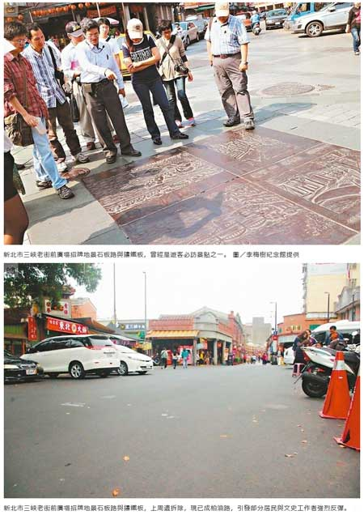

三峽老街拆石板路 「不幸的錯誤」
捨防滑科技直接刨除 引起反彈
市長批手法粗暴、指示補救
區公所：滑倒事件多 考量安全拆除
連珮宇、魏莨伊｜聯合報／新北市新聞｜2016年4月13日
新北市三峽老街前廣場的招牌地景石板路與鑄鐵板，上周遭三峽區公所刨除改鋪柏油，引發部分居民與文史工作者強烈反彈，市長朱立倫昨天批評此事手法「粗暴」，是「不幸的錯誤」，指示有關單位立即補救。
三峽區公所主任秘書陳明進對此表示，過去5年在廣場滑倒有報案、叫救護車的共6件；附近里長說，未報案的達上百件。區公所考量交通安全，近年會同顧問公司與當地里長會勘3次，曾目睹騎士摔車，因此決定拆除。
陳明進說，雖然路面刨除工程程序符合相關法規，但確實忽略文史藝術的保存，公所很感謝在地文史工作者、居民等意見與重視，接下來將盡快研擬補救方案。
新北市文化局表示，遭刨除的石板路並非法定文化資產，但仍是藝術品，「不一定要年代久遠才算」，文化局會和地方溝通，保存或展示拆除後的石板、鐵板，在錯誤中找到彌補方法，推廣三峽之美。
朱立倫昨在市政會議中說，對於石板路遭拆，他感到無法想像又不可思議，「這種時代居然還用這麼粗暴的方式，對待深具重要指標、文史保存意義的三峽老街」，不僅社會大眾難接受，他身為市長更是深感遺憾，必須負起責任，對所有文史工作者與民眾深表歉意。
李梅樹紀念館執行長李景文表示，紀念館9年前無償提供李梅樹畫作，製作模具生產鑄鐵板，區公所未經許可擅自拆除，紀念館將不同意轉移他處使用，近期考慮依法追訴。
地方文史工作者張光驊表示，石板路選用材質與歐洲聖彼得教堂廣場相同，行車安全固然重要，但防滑科技千百種，區公所卻因一字「滑」就擅自決定刨除，令人心痛。
三峽老街拆石板路 「不幸的錯誤」
連珮宇｜聯合報／新北市新聞｜2016年4月13日
知名的三峽老街，主要指民權街南段的三角湧街庄，約中山路十三巷至仁愛街間230公尺距離。三峽老街興盛於清領時期，為北台灣轉運茶葉、煤礦、樟腦、藍靛及染布的重鎮，繁華一時，卻在光緒年間遭日軍侵襲，儘管當地三角湧義軍奮力抵抗，但老街仍遭日軍燒毀，付之一炬。
三峽區公所表示，經在地民眾積極爭取整建，民國91年文資法頒布後，文建會與舊縣府終於共同撥款近3億整治，除了老街建築修繕，亦以花崗岩、青斗石等上等石材，鋪設現今招牌石板路面，周遭覆蓋刻畫三峽地景、畫家李梅樹畫作的鑄鐵板，成為老街招牌風貌。
上周由當地里長、三峽區公所工務課主導，以石板地面雨天濕滑為由，無預警拆除的路段，儘管只有短短近40公尺長度，但卻超過半數鑄鐵板所在的精華路段，過去曾是到訪遊客必訪景點之一，總價值逾百萬元，文史藝術價值則不可估計。改鋪柏油後，不只居民表達不捨，也引發當地文史工作者強烈反彈。